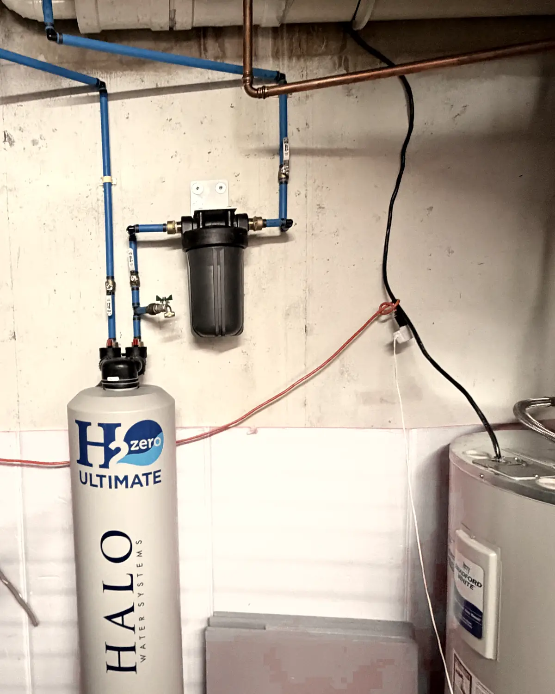

Water filtration and softeners
Scale on the fixtures, spots on the dishes, or water that smells like a pool. We test your water, then install a system that fits what is in it.

Water filtration and softeners
What we install
- Water softeners
- Whole-house carbon filtration
- Sediment prefilters
- Salt-free conditioners
- Combined filter and conditioner systems
- Water testing before we quote
- Bypass and shutoff valves
- Drain line connections
- Old system removal
Know what you're looking at
Signs your water needs attention
- White crust on faucets and shower heads
- That is scale: calcium and magnesium left behind when hard water dries. The same crust builds up inside the water heater, where you cannot see it.
- Spots on glasses and soap that will not lather
- Both point to hardness. A softener takes the minerals out. A salt-free conditioner leaves them in the water but keeps them from sticking to surfaces.
- A chlorine taste or smell
- Public water is disinfected with chlorine. A whole-house carbon filter takes the taste and the smell out at every tap, the shower included.
- Orange stains or grit in the faucet screens
- Usually iron or sediment, more common on well water and in homes with old galvanized pipe. A sediment filter catches grit. Iron needs its own treatment, which is one reason we test first.
We test before we quote
Most homes in Delaware County and on the Main Line get their water from Aqua Pennsylvania, and hardness changes with the town and the source. A home on a private well is a different job again. We test the water at your tap and fit the system to the result, so you do not pay for treatment you do not need.
How a job goes
Three steps, no surprises
Book or call
Pick a time online or call. One of us comes out and looks at what you have now.
You get a price
We explain the options in plain words and price each one. Nothing starts until you say go.
We install it
An owner does the work, tests it, shows you how it runs and takes the old equipment away.
Common questions
Water treatment questions
Softener or filter: which one do I need?
They do different jobs. A softener deals with hardness, the minerals behind scale and spots. A carbon filter deals with chlorine taste and smell. Plenty of homes want both, and a combined system handles the two in one install.
Does a softener make the water salty?
No. The salt cleans the softener's resin and is rinsed down the drain. Softening does add a small amount of sodium to the water, more when the water started out harder. If that matters in your house, ask us about a salt-free system.
How much upkeep is there?
A softener needs salt added to its brine tank, usually every month or two. Sediment cartridges are changed on a schedule that depends on your water and how much you use. Tank-style carbon filters run for years between media changes.
Where does it go, and how long does it take?
Where the main water line comes into the house, usually in the basement near the meter and the water heater. It needs a drain close by and, for most systems, an outlet. Most installs are finished the same day.
Schedule service
Tired of hard water?
Book a visit online or call. We will test your water and price the options.